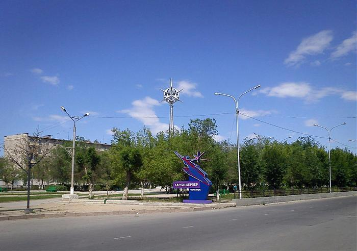
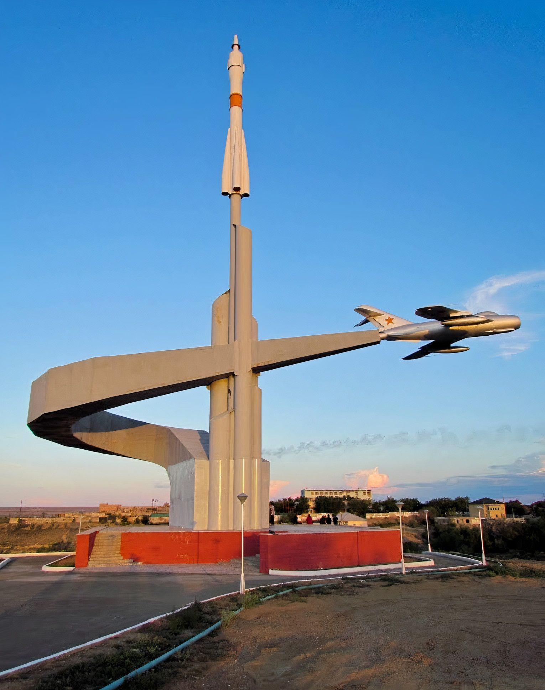
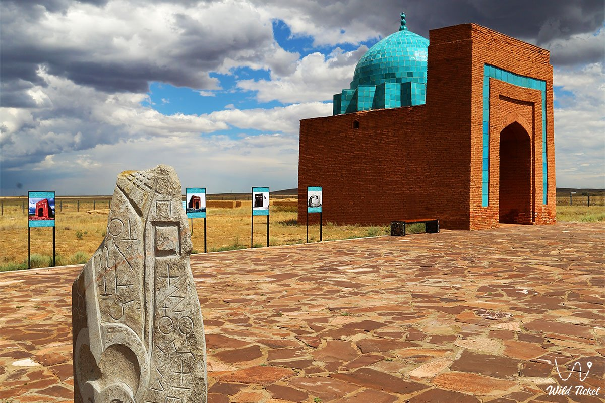
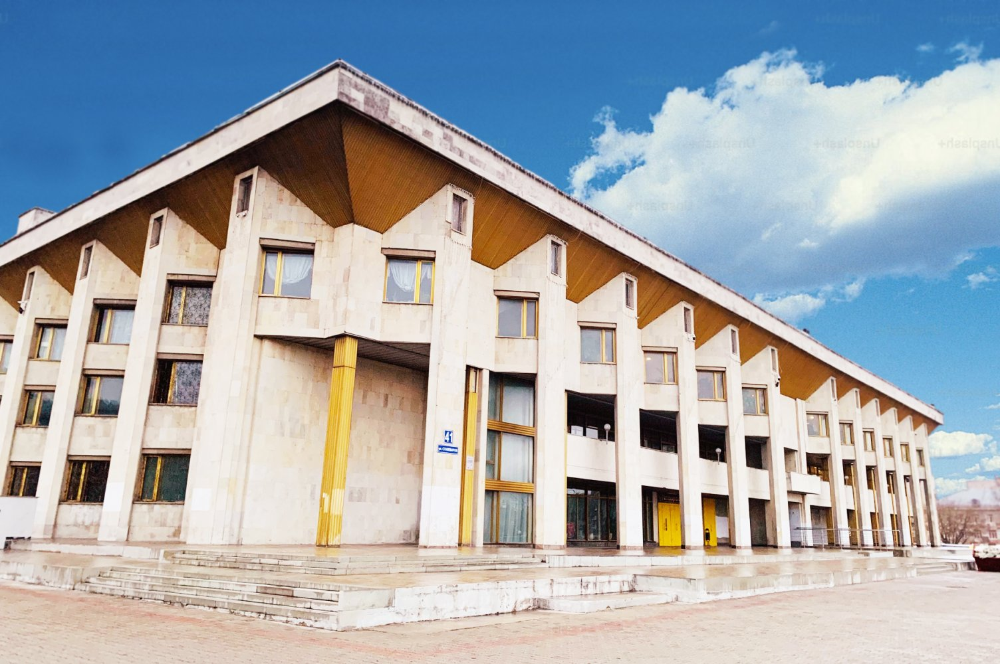

Жезказган
Название города в переводе с казахского означает «место, где копали медь», что прямо указывает на его главное богатство. Регион Жезказгана известен как один из крупнейших в мире центров добычи и переработки меди. Об этом свидетельствуют древние археологические находки, доказывающие, что медь здесь добывали еще в эпоху бронзы.
Население: около 90–91 тысячи человек.
Основан: официальный статус города получил 20 декабря 1954 года.
История
История региона уходит корнями в глубокую древность, о медных месторождениях впервые упоминалось еще в работах древнегреческого историка Геродота. Современное развитие началось в XX веке. В 1929 году по инициативе Каныша Сатпаева началось масштабное освоение громадного Жезказганского месторождения. На его базе был построен крупный горно-металлургический комбинат. В 1940-х годах были построены комбинат, железная дорога и Кенгирское водохранилище, которое до сих пор обеспечивает город водой. После получения статуса города в 1954 году, Жезказган превратился в крупнейший центр цветной металлургии. В 2022 году Жезказган стал областным центром вновь образованной Улытауской области.
Достопримечательности
-

Бульвар Космонавтов: Получил свое название благодаря тому, что Жезказган традиционно служил местом приема космонавтов после их приземления из космоса. Здесь есть памятные знаки и стела «Космос».
-

Монумент покорителям космоса: Необычная скульптурная композиция с самолетом и ракетой, напоминающая о близости к космодрому Байконур.
-

Мавзолей Жошы-хана: Древний архитектурный памятник
-

Дворец металлургов: Одно из главных зданий города, символизирующее его промышленное наследие.
Культура
Культура Жезказгана тесно связана с его промышленным и историческим прошлым. Это моногород, жизнь которого вращается вокруг добычи меди, но в то же время он является воротами в регион Улытау — колыбель казахской государственности и центр многих эпических сказаний. Близость к космической гавани Байконур добавила в культуру города уникальный «космический» колорит.
Интересные факты
- Жезказган расположен примерно в 400 км от космодрома Байконур и традиционно является одним из главных центров встречи экипажей космических кораблей, возвращающихся на Землю.
- В городе есть улицы и бульвары, названные в честь космонавтов, которые здесь гостили.
- Кенгирское водохранилище является жизненно важным источником пресной воды в засушливом регионе.